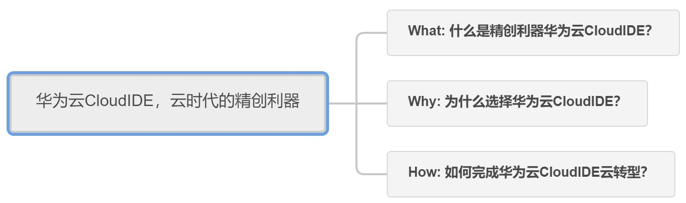
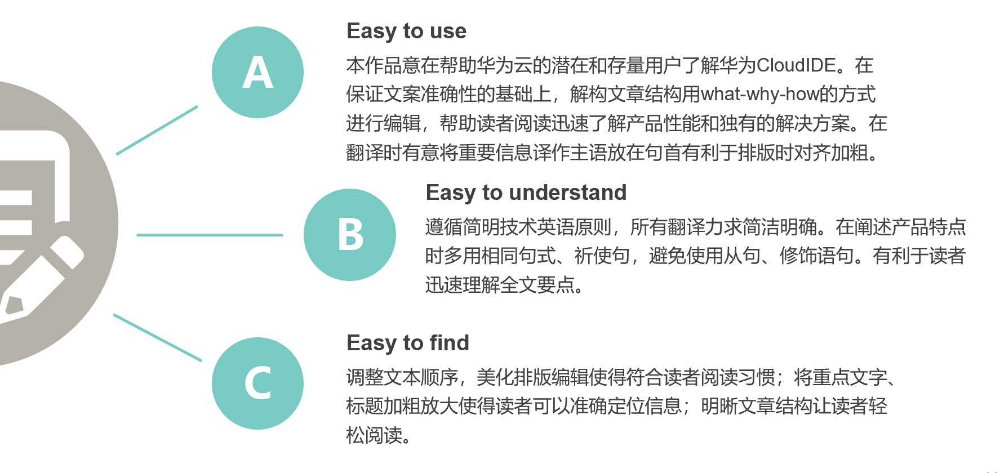
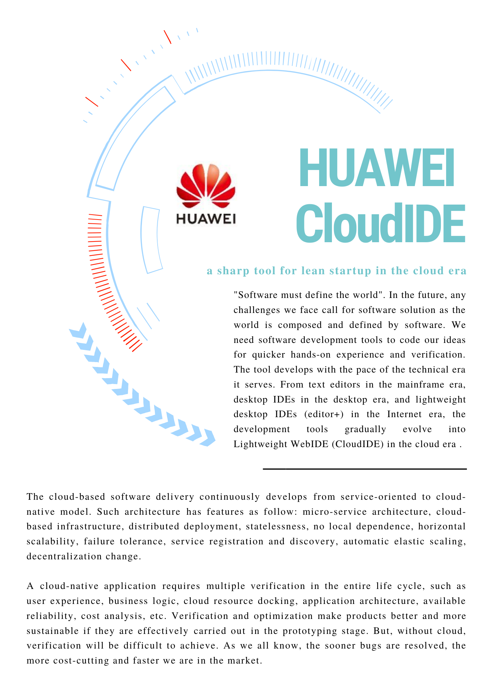
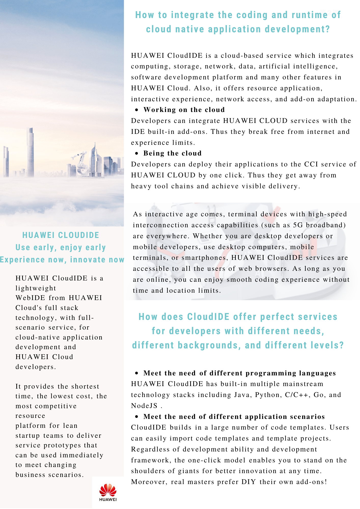
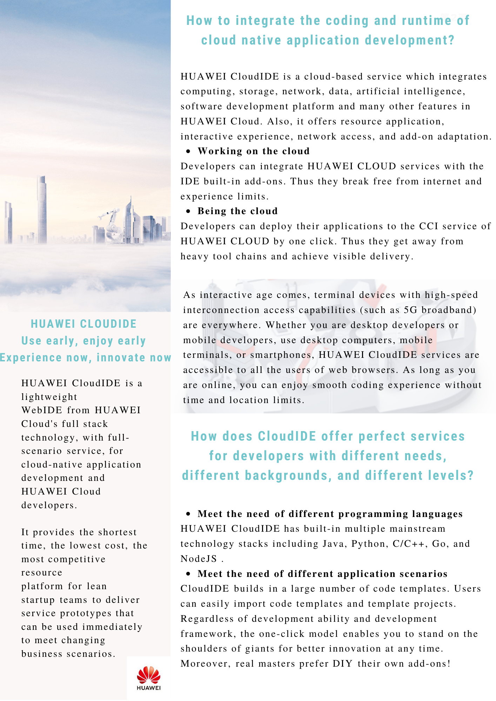

思源华为杯创译大赛创作思路
本次创译大赛的背景是华为云的营销人员面向华为云的潜在和存量用户，在杂志（期刊）上发表的产品文案。文章围绕华为云CloudIDE产品，旨在提升品牌效应，让更多的人了解华为云可以帮助各行各业解决什么困难，应对哪些挑战，如何助力各行各业完成云转型。我将从文章结构、翻译与排版等方面阐述我的创译思路：
一、分析文本结构
结合文案北京信息，为了能为读者呈现清晰的文本，首先我分析文本结构，将内容分成三大部分别是What\Why\How：

本次大赛给到的文本是一段未经排版和分层的中文文案，我通过对原文的逻辑切割和重构，将文章解构成几个小节并分别汇总于What\Why\How 三大部分中。
What 部分从介绍软件开发工具的发展引入，由于云时代对精创利器的需求上升进而推出本文宣传的核心产品华为云CloudIDE产品。
Why 部分展示华为云CloudIDE产品对精创的支持之道和极高的验证效率两大产品亮点，为读者解释选择该产品的理由。
How 部分围绕用户在使用华为云的两大问题，即“如何打通云原生应用开发的编码与运行时”和“如何做到术业有专攻闻道有先后”，让读者了解华为云可以帮助各行各业解决什么困难，应对哪些挑战。
二、从翻译到技术写作
本次大赛的原文具有一定的技术专业性也带有营销宣传目的。在创译时要注意译文的准确性和可读性。要以读者为中心，简洁清晰地传达原文理念。同时，在语言风格上要拉近与读者的距离做到既平易近人又客观礼貌。这便是本次大赛的难点，处理得当也将成为一大亮点。因此，我将创译的过程上升至技术写作的维度，在翻译过程中我借鉴技术翻译、技术写作等规范进行创译。
IBM的经典之作《Developing Quality Technical Information》一书中提到高质量技术文本应遵循三大要求：“Easy to use”、“Easy to understand”、“Easy to find”。我也尽可能让译文符合这三大要求： 
二、文档排版
排版也是最能体现创译之“创”的环节，清爽简洁的排版能让读者迅速进入“阅读模式”，感受到品牌的力量。我浏览华为官网，选择了符合华为云产品特点的官网图片与华为官方LOGO，使用PS软件将文案组织成更具可读性的杂志海报形式，让华为品牌一直想要表达的万物互联、科技未来的理念深入人心。
（图片来自华为云官网）
在全文大标题的处理上，我将原标题“华为云CloudIDE，云时代的精创利器“拆分成主标题“华为云CloudIDE”和副标题“云时代的精创利器”，用不同颜色和字体突出体现主标题，并添加了具有未来感的弧状设计，让读者在阅读的第一眼就能顺利进入我所打造的“文字世界”。
在产品亮点的处理上，特别是第二部分Why，我将所有产品特性加粗，列为无序列表并添加相应的图标抓住读者的眼球。
作品展示

 

作者：胡清莹
如需转载请注明作者与来源。